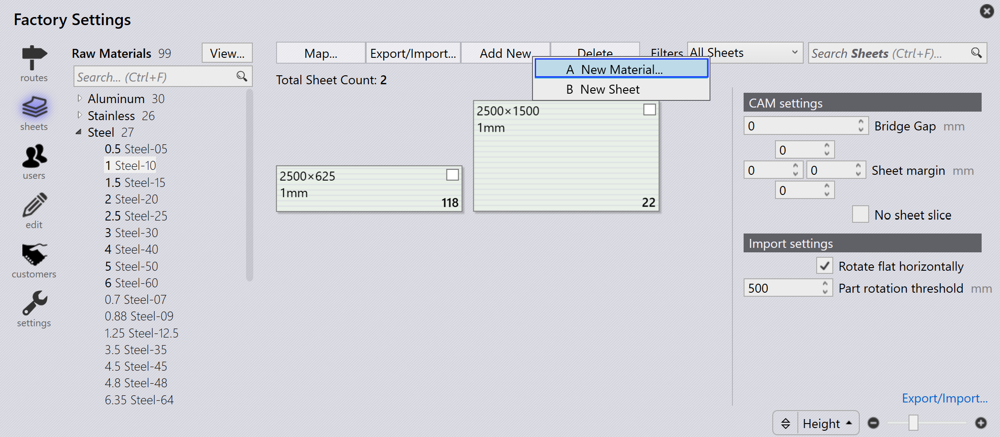

Agregar nuevo material y lámina
La gestión de láminas puede ser accedida haciendo clic en el icono fábrica y seleccionando chapas. Esto proporciona una descripción general de los materiales que están configurados. Seleccionar cualquier material listado a la izquierda muestra las láminas disponibles, espesores, tamaños y cantidades.
Para agregar un nuevo material, haga clic en Añadir nuevos artículos → Nuevo material… desde la página chapas en fábrica.

Ingrese Material, Materia prima, Espesor y parámetros del Material. Haga clic en OK.

Ver material
La opción _Vista… en fábrica → *chapas tiene las siguientes opciones:
-
*Expandir todo: Expande todas las categorías de material.
-
*Contraer todo: Colapsa todas las categorías de material.
-
*Mostrar todos los materiales: Lista todas las materias primas sin importar el inventario de láminas.
-
*Motrar materiales de inventario: Lista solo las materias primas que tienen inventario de láminas.
| El espesor de Materia Prima mostrado en negrita representa la disponibilidad de láminas. |

Agregar lámina
Para agregar una nueva lámina, haga clic en Añadir nuevos artículos → Nueva chapa desde la página Sheets en *fábrica. Modifique los parámetros de Lámina.


-
Buscar… (Ctrl+F) (Ctrl + F)…: Filtra láminas con respecto al tamaño, veta, comentarios, número de calor, remanente y vaporización.
-
Deslizador (+ / –): Ajusta el nivel de zoom de la vista previa de la lámina.
-
Filter by: Controla la vista previa de la lámina según la opción seleccionada (Anchura, Altura, Área, Cantidad, Grain, o Tipo).
|
La edición o eliminación de un material o lámina solo puede hacerse antes de que una pieza sea asignada a ese material o un diseño sea anidado en esa lámina. Cambiar el nombre del material no es posible en esta etapa. Por lo tanto, se debe crear un nuevo material. |